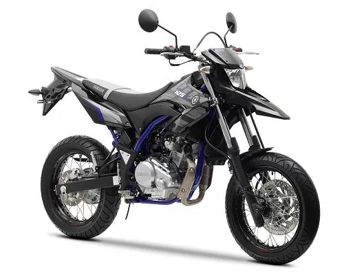

Supermoto légère et fun: parfaite pour apprendre, se déplacer, et s’amuser en ville.
Une moto légère, agile, et très “joueuse”. Idéale si tu roules souvent en ville et sur petites routes.

Avec sa position haute et sa maniabilité, la WR125X est super agréable pour les trajets quotidiens et les balades tranquilles.
| Catégorie | Supermoto |
|---|---|
| Idéal pour | Ville / petites routes |
| Niveau | Débutant |
| Cylindrée | 125 cm³ |